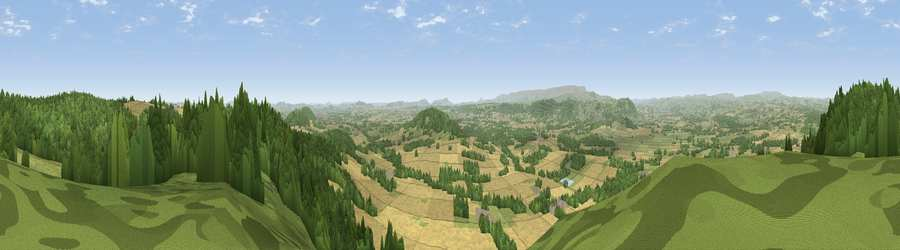

Viewpoint near Norton Canon
#1364 in England · top 3% of its area beats it · near Norton CanonThe view, rendered

A 360° render of this exact spot computed from the terrain model, tree cover and land cover — summer colours, afternoon light, calibrated against photographs of famous viewpoints. Real trees, hedges and buildings will differ in detail.
The panorama
Grey silhouette: terrain skyline in each direction (720 bearings, Earth curvature and refraction included). Dashed green: skyline with trees (+15 m) and buildings (+8 m) as obstacles. Blue strip: how far the ground is visible on each bearing.
Where the view opens
Wedge length = distance to the farthest visible ground on that bearing (vegetation-aware). Rings at 10, 25 and 50 km.
What fills the view
41% woodland · 38% cropland · 20% grassland ·
Angular shares of the visible panorama (visual magnitude), not map area. Landscape diversity 0.47 (0–1 Shannon).
Key numbers
More beautiful places nearby
The staircase of upgrades: each row has a higher view potential than everything closer. Driving times are estimates from straight-line distance, calibrated against real road routing — check an actual route before setting out.
| Place | Direction | Drive | Score |
|---|---|---|---|
| Viewpoint near Norton Canon | NNW · 1 km | ~3 min | 79.3 |
| Viewpoint near Weobley | NNE · 2 km | ~4 min | 79.7 |
| Merbach Hill | WSW · 10 km | ~19 min | 81.1 |
| Viewpoint near Craswall | SW · 19 km | ~32 min | 81.5 |
| Gatley Hill | NNE · 22 km | ~37 min | 82.6 |
| Garway Hill | S · 23 km | ~38 min | 84.6 |
| Herefordshire Beacon | ESE · 37 km | ~56 min | 85.8 |
| Millennium Hill | ESE · 37 km | ~56 min | 86.9 |
52.12588, -2.88260 · source: screening · position refined by local search. Computed location — check access rights before visiting.